Holidays / February
February holidays and observances
The shortest month is crowded. Groundhog Day, Valentine's Day and Presidents' Day anchor it, Mardi Gras usually lands here, and Leap Day shows up once every four years.
Written and illustrated by Graysmith Labs, the makers of CelebriDay.
 February 1National Freedom Day, Serpent Day
February 1National Freedom Day, Serpent Day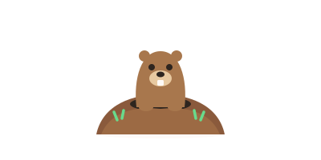
February 2Groundhog Day, Candlemas February 3National Carrot Cake Day
February 3National Carrot Cake Day February 4World Cancer Day, Liberace Day
February 4World Cancer Day, Liberace Day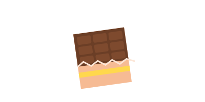
February 5World Nutella Day, National Weatherpersons Day- February 6National Frozen Yogurt Day, Lame Duck Day
 February 7National Send a Card to a Friend Day, Wave All Your Fingers at Your Neighbors Day
February 7National Send a Card to a Friend Day, Wave All Your Fingers at Your Neighbors Day- February 8Boy Scout Day, Kite Flying Day
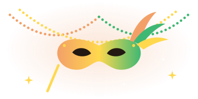
February 9Mardi Gras, National Pizza Day, Toothache Day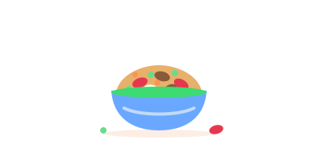
February 10World Pulses Day, Umbrella Day- February 11National Inventors' Day, Do Not Cry Over Spilled Milk Day
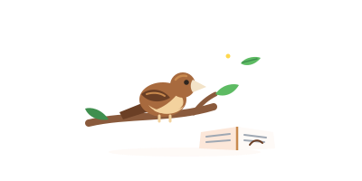
February 12Darwin Day, National Plum Pudding Day- February 13World Radio Day, Galentine's Day
- February 14Super Bowl Sunday, Valentine's Day
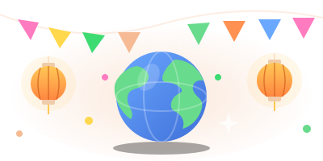
February 15Presidents' Day, National Gumdrop Day, Singles Awareness Day- February 16National Almond Day, Do a Grouch a Favor Day
 February 17National Random Acts of Kindness Day
February 17National Random Acts of Kindness Day- February 18National Drink Wine Day, Battery Day
- February 19National Chocolate Mint Day
- February 20World Day of Social Justice, Love Your Pet Day
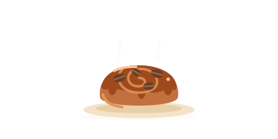
February 21National Sticky Bun Day, International Mother Language Day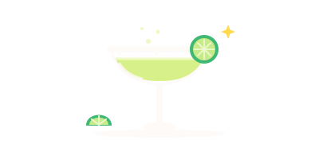
February 22National Margarita Day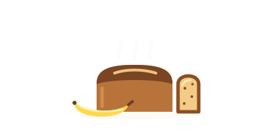
February 23National Banana Bread Day, Play Tennis Day February 24National Tortilla Chip Day
February 24National Tortilla Chip Day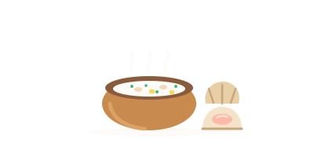
February 25National Clam Chowder Day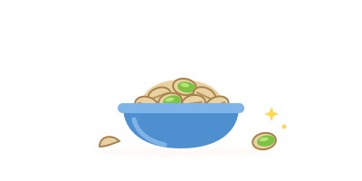
February 26National Pistachio Day, Tell a Fairy Tale Day
February 27National Polar Bear Day
February 28National Tooth Fairy Day, Floral Design Day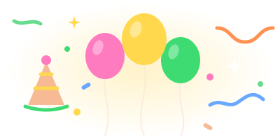
February 29Leap Day